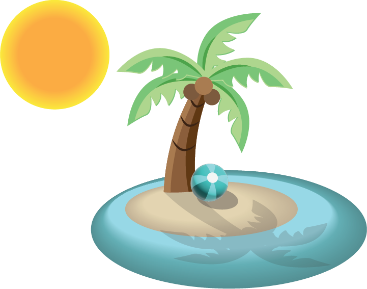

Hello and welcome to my resume! My name is Kallie Burnach and I am an artist/ aspiring animator. I am a current student at Seminole State College and working towards getting my A.A. while majoring in Art-Emerging Media. I have taken numerous art classes from traditional to digital at SSC and am continuing to expand my portfolio. After SSC, I plan to continue my studies at UCF. I also hope to one day work for the Walt Disney Animation Studios, or something closely related to that.
Check me out on Instagram, Facebook, and LinkedIn!

Watercolor & black fine-tip Sharpie illustration.

Digital illustration of a palm tree on an island with a beach ball. Made on Adobe Illustrator.

Colored pencil illustration made on a dictionary page.

Digital illustration of a tribal turtle. Made on Adobe Illustrator.

Digital illustration done on Procreate.